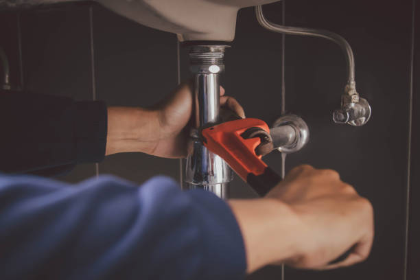

Three Forks Montana
info@Tophandyman.pro
Three Forks Montana
info@Tophandyman.pro

Reliable handyman services in Three Forks Montana ! From repairs to installations, we handle it all with precision. Trusted experts ensuring your home improvement needs are met efficiently. Call today!
Click Here To Call Us (877) 848-1711When it comes to reliable and efficient handyman services in Three Forks Montana our team is your trusted choice. Whether you need minor repairs, installations, or full-scale maintenance, we are here to handle it all. Our highly skilled professionals bring years of experience to every project, ensuring quality workmanship you can depend on.
We specialize in a wide range of services, including home repairs, plumbing fixes, electrical maintenance, painting, carpentry, and much more. Need help assembling furniture or mounting a TV? We've got you covered! Our comprehensive solutions save you time, money, and the hassle of dealing with multiple contractors. We are your one-stop shop for all your home improvement needs.
At our company, we pride ourselves on excellent customer service and attention to detail. We work closely with you to understand your requirements and deliver results that exceed expectations. With flexible scheduling, affordable rates, and a commitment to satisfaction, we ensure a seamless experience from start to finish.
Choose our handyman services in Three Forks Montana for professional solutions tailored to your needs. Contact us today for a free estimate and let us bring your home improvement projects to life. Reliable, affordable, and always on time – we are the handyman service you can trust in Three Forks Montana .
Residential & commercial Handy man
Quality services at affordable prices
Immediate 24/ 7 emergency services


When it comes to reliable and professional handyman services, look no further than our Expert Handyman Solutions in Three Forks Montana . Whether you're a homeowner looking for minor repairs or a business in need of maintenance, our skilled team is here to assist with all your residential and commercial needs.
Our services cover a wide range of tasks, including but not limited to, plumbing, electrical work, painting, carpentry, drywall installation, and general repairs. With years of experience, we take pride in delivering high-quality workmanship, ensuring that every job is done efficiently and to the highest standards.
For homeowners, we understand how essential it is to maintain a comfortable and functional living space. From fixing leaky faucets to assembling furniture, our team is equipped to handle any job. For businesses, we offer tailored solutions to keep your commercial property in top shape. We handle everything from routine maintenance to complex repairs, helping you avoid costly disruptions to your operations.
Our commitment to customer satisfaction sets us apart. We offer fast, reliable, and affordable handyman services throughout Three Forks Montana ensuring that you receive the best value for your investment. No job is too big or small, and we guarantee that all work is completed to your satisfaction. Choose the experts in handyman services and get your project done right the first time.
Let us help you with all your residential and commercial needs in Three Forks Montana . Contact us today for a consultation or a free estimate!
Residential & commercial Handy man
Quality services at affordable prices
Immediate 24/ 7 emergency services
Proper weatherproofing and insulation are essential for keeping your home comfortable and energy-efficient. Our weatherproofing and insulation services include assessing your home's current insulation levels and sealing drafts to enhance energy efficiency. We offer solutions that contribute to lower energy bills and improved comfort throughout the seasons. Trust our expert team to optimize your home for the best performance against the elements.

Your home's siding impacts both appearance and protection. Our siding repair and installation services ensure that your home’s exterior remains stylish while providing the protection it needs. Whether you require minor repairs or complete installation, we use high-quality materials and expert techniques. Our commitment to excellence guarantees that your siding will withstand the elements and enhance your home's curb appeal.

Smart home technology has revolutionized the way we live, offering convenience, security, and energy efficiency. Our smart home installation and setup services help you turn your home into a technologically advanced space that suits your lifestyle.
From smart lighting and thermostats to security cameras and smart locks, our team can assist with the installation and configuration of a wide range of smart devices. We take the time to understand your needs and recommend the best products that integrate seamlessly into your daily life.
Why choose us for your smart home installations? Our knowledgeable technicians are up-to-date with the latest technologies and trends in home automation. We prioritize safety and efficiency, ensuring that all devices are properly installed and connected.
Transform your home into a modern, smart home with our installation services . We believe in providing high-quality service that enhances your living experience while offering the utmost convenience.

Seasonal maintenance is essential for keeping your home in top shape at all times. Our seasonal and outdoor handyman services ensure that your property remains well-maintained and ready for every season’s challenges.
From summer yard clean-up to winterizing your home, our team is versatile and ready to assist with a wide range of seasonal tasks. We can help with lawn care, gutter cleaning, snow removal, and more. Our services are customized to fit the seasonal needs of your home and property.
What sets us apart? Our commitment to thorough and reliable service means that you can count on us to take care of your seasonal maintenance without the hassle. We have the right equipment and expertise to provide effective solutions for your outdoor needs.
Our seasonal and outdoor handyman services in Three Forks Montana will help you enjoy your home without the stress of maintenance. Contact us today to learn more about how we can contribute to your home’s upkeep throughout the year.

Seasonal maintenance is critical to keeping your home in prime condition. Our spring and fall home maintenance services in Three Forks Montana include thorough inspections, repairs, and preparations for the changing seasons. We help you identify potential issues before they become costly repairs, ensuring your home remains safe and comfortable. Trust our experienced team for reliable service that keeps your home ready for whatever the season brings.
An attractive yard boosts curb appeal and enhances outdoor enjoyment. Our yard maintenance and landscaping services include lawn care, gardening, mulching, and more. We offer customized solutions that fit your preferences and budget while ensuring your outdoor space remains healthy and beautiful. Choose us for dedicated service that enhances your home’s exterior and creates an inviting atmosphere for family and friends.

The holiday season is a special time, and we help you make it memorable with our holiday light installation services . Our team designs and installs stunning light displays that transform your home into a winter wonderland, all while ensuring safety and compliance. We handle all aspects of installation and removal, letting you enjoy the festivities without the hassle. Choose us for magical holiday light installations that bring joy to your celebrations.

Outdoor furniture enhances your enjoyment of outdoor spaces, but it can suffer from weather wear and tear. Our outdoor furniture repair and assembly services in Three Forks Montana offer expert care to bring your furnishings back to life. Whether you need repairs on wooden chairs, rust removal from metal tables, or assembly of new pieces, our skilled team provides quality solutions. Trust us to ensure your outdoor spaces are comfortable and inviting, providing the perfect settings for relaxation and gatherings.

Your roof is one of the most critical components of your home, safeguarding you from moisture, heat, and debris. At Handy man, we specialize in roof inspection and minor repair services ensuring your roof remains in excellent condition.
Our experienced inspectors assess your roof thoroughly, identifying potential issues before they become significant problems. If repairs are necessary, we skillfully address them, using high-quality materials to ensure lasting protection for your home.
Why trust Handy man? We emphasize transparent communication, quality workmanship, and customer satisfaction. Your home’s protection is our priority, and we work diligently to keep your roof in top shape for years to come. Count on us for expert roof inspection and repair services .
Years Experience
Expert Technicians
Satisfied Clients
Compleate Projects
At Top Handyman, we take pride in being your trusted, reliable partner for all handyman services in Three Forks Montana . Whether it's a small repair, home improvement, or major renovation project, we offer expert solutions that you can count on. We’re a local business that understands the needs of our customers in Three Forks Montana and strive to provide top-notch service at competitive prices.
Experience and Expertise You Can Trust
With years of experience in the industry, our team of skilled professionals is equipped to handle a wide range of services, including plumbing, electrical, carpentry, painting, and more. No job is too big or small for us. We pride ourselves on our versatility, offering comprehensive services that make us your one-stop-shop for all home maintenance needs.
Quality Work, Every Time
At Top Handyman, we don’t just get the job done; we do it right. Our commitment to quality ensures that each project is completed to the highest standards. We use only premium materials and the latest tools to ensure long-lasting results, and we’re committed to exceeding your expectations every time.
Affordable and Transparent Pricing
We believe in honest pricing with no hidden fees. Our transparent pricing model ensures that you know exactly what to expect before we begin work, making Top Handyman an affordable choice for homeowners in Three Forks Montana . Let us help you tackle your to-do list with professionalism, reliability, and affordability.
Choose Top Handyman—the trusted handyman service in Three Forks Montana you can rely on!
Home repairs can be a daunting task for homeowners. At our company, we provide an extensive array of home repair and maintenance services designed to keep your home in top shape. Our skilled technicians are trained to tackle anything from leaky roofs to squeaky doors. Choosing us means opting for quality workmanship, timely services, and a commitment to customer satisfaction. We understand that your home is your sanctuary, and we treat it with utmost respect and care. Regular maintenance is essential to prevent costly repairs down the road, and our team in Three Forks Montana is here to ensure your home stays safe, functional, and beautiful.
Have you ever struggled to assemble new furniture after a long day? Whether it's a complex Ikea wardrobe or a simple desk, assembling furniture can be daunting and time-consuming. At Handy man, we offer professional furniture assembly services ensuring your new pieces are set up quickly and efficiently.
Our expert team is trained to handle all kinds of furniture, from modern designs to traditional styles. We understand that every piece is unique, and we take the utmost care in ensuring that each item is assembled correctly and securely. This not only saves you time but also enhances the longevity of your furniture.
Choosing us means you are opting for convenience, speed, and superior quality. We're here to alleviate your stress and help you enjoy your beautifully furnished home without the hassle. Trust Handy man for all your assembly needs and see the difference that our experienced craftsmen can make in your Three Forks Montana home.
Drywall is a crucial component of any home, but it can easily suffer from damage due to wear and tear, moisture, or impact. Our drywall repair and installation services will restore the beauty of your walls. Whether you need patching, texture application, or complete drywall installation, our skilled team is equipped to handle it all. We use top-quality materials and techniques to ensure a flawless finish. Trust our experienced handymen to deliver high-quality, seamless repairs that will make your walls look as good as new.
Electrical issues can be both frustrating and dangerous. If you’re experiencing flickering lights or outlets that don’t work, it’s essential to have a qualified electrician address the problem promptly. At Handy man, we provide comprehensive electrical repair and installation services ensuring your safety and satisfaction.
Our licensed electricians are skilled in troubleshooting and resolving a variety of electrical problems efficiently. Whether it’s updating your light fixtures, installing new outlets, or addressing more complex wiring issues, our experts have the knowledge and experience to get the job done.
Safety is our top priority, which is why we adhere strictly to electrical codes and standards. With Handy man, you can trust that your electrical systems will be safe and efficient. Our dedication to superior service and customer satisfaction makes us the go-to choice for all electrical repairs and installations.
When it comes to plumbing issues, time is of the essence. Whether you’re facing a leaky pipe, a clogged drain, or require new plumbing installations, our plumbing repair and installation services are designed to address all of your plumbing concerns efficiently and effectively.
Our team is comprised of experienced plumbers who specialize in a variety of plumbing services, including fixture installations, pipe repairs, and drain cleaning. We understand the unique plumbing needs of homes and strive to provide solutions that suit your specific situation.
Choosing our plumbing services means choosing a commitment to quality and reliability. We utilize the latest equipment and techniques to ensure that your plumbing system operates at peak performance. We also recognize that plumbing emergencies can disrupt your life, which is why we offer quick response times and flexible scheduling to accommodate your needs.
Our pricing is transparent, and we provide you with detailed estimates prior to commencing any work. We're not just your plumbers; we’re your partners in maintaining a functional and efficient home.
A fresh coat of paint can transform any space and enhance the appeal of your home. Our painting and touch-up services offer high-quality finishes for both interiors and exteriors. Our professional painters are adept at color selection and can provide expert guidance to achieve the look you desire. We only use top-grade paints and materials, ensuring a long-lasting, beautiful finish. Choose us for your painting needs, and let us help you create the ambiance you’ve envisioned in every room of your home.
Over time, tile and grout can show signs of wear and tear, which can impact the look of your floors and walls. Our tile and grout repair services in Three Forks Montana are aimed at restoring beauty and functionality to your surfaces. We specialize in regrouting, cleaning, and repairing tiles, ensuring they look as good as new. Our team's attention to detail and quality workmanship guarantee that you will enjoy a stunning, durable finish. Choose us for reliable service that enhances your space.
Doors and windows are the entry points to your home, and damage to them can compromise your security and energy efficiency. At Handy man, we provide expert door and window repair services ensuring your home remains safe and stylish.
Our team is skilled in repairing a variety of door and window types, including wooden, fiberglass, and vinyl. Whether you need to fix a broken latch, replace a broken window pane, or enhance your door’s insulation, we are here to assist. We focus on maintaining the functionality and aesthetic appeal of your entrances and exits.
In Three Forks Montana our reputation is built on reliability, quality workmanship, and exceptional customer service. We take pride in our attention to detail and commitment to your satisfaction. Choose Handy man for all your door and window repair needs, and let us help you enjoy a secure and beautiful home.
Proper caulking and sealing play a key role in energy efficiency and protecting your home from drafts and water damage. Our caulking and sealing services ensure that your home is well-insulated and secure, giving you peace of mind year-round.
Our expert team is skilled at identifying areas that need caulking, such as windows, doors, bathtubs, and exterior trim. We use high-quality caulk that stands up to the elements, preventing air and water leaks. This not only improves your home’s energy efficiency but also enhances its aesthetic appeal.
Choosing our services means working with professionals who prioritize quality and durability. We pay meticulous attention to detail, ensuring that every application is smooth and effective. We’re committed to educating our customers on the importance of ongoing maintenance, helping you protect your investment.
Our caulking and sealing services are efficient, convenient, and designed to fit your schedule. Let us help you keep your home comfortable and energy-efficient all year round.
Home renovations, even the minor ones, can significantly enhance your living space. At Handy man, we specialize in minor home renovations in Three Forks Montana helping you transform your home into a more functional and beautiful environment.
Whether you’re looking to update your kitchen cabinetry, remodel a bathroom, or refresh your living room with a new layout, our team of skilled professionals is here to help. We work closely with you to understand your vision and deliver results that exceed your expectations.
With a focus on craftsmanship and attention to detail, we ensure that every aspect of your renovation is handled with care. Our commitment to customer satisfaction and quality workmanship sets us apart . Choose Handy man for all your renovation needs and see your dream home come to life.
Every home has unique needs that require specialized skills. Our specialized handyman services are designed to cater to those unique requirements, whether it’s home automation, furniture repair, or unique installations. Our experienced professionals have a wealth of knowledge across various areas and can tackle tasks that standard handymen may overlook. By choosing us, you gain access to a wide range of skills, ensuring every project is completed to the highest standard.
A deck can be the heart of outdoor living spaces, providing a perfect venue for gatherings and relaxation. Our deck repair and building services in Three Forks Montana will help you maintain or construct your dream deck. We handle everything from complete deck construction to repairs and refurbishments of existing structures. Our expert team uses quality materials to ensure your deck is not only beautiful but also durable and safe. Count on us to enhance your outdoor living experience with a stunning deck.
Fences provide privacy, security, and aesthetic appeal to your property. Our fence installation and repair services cater to all types of fencing needs, whether it’s wood, vinyl, or chain link. Our experienced team will work with you to design and install a fence that not only meets your needs but complements your property. Trust us for all aspects of fence repair as well, ensuring your barriers are robust and striking. Choose us for quality workmanship and exceptional customer service, protecting what matters most to you.
The right flooring can transform your space, adding style, comfort, and value to your home. At Handy man, we specialize in flooring installation services, including laminate, vinyl, and more in Three Forks Montana . Our team is dedicated to providing exceptional craftsmanship and customer service.
We understand that selecting the perfect flooring can be overwhelming, which is why we offer expert guidance throughout the selection process. Our professionals will work with you to choose the best materials that fit both your aesthetic preferences and lifestyle needs.
Installation is just as crucial as selection; our experienced team ensures that your flooring is installed flawlessly, with attention to detail that guarantees a lasting finish. Collaborate with Handy man for all your flooring needs, and enjoy a beautiful and durable floor in your Three Forks Montana home.
In today’s world, energy efficiency is more important than ever. Upgrading your home’s energy systems not only reduces your environmental footprint, but it can also save you money on your utility bills. At Handy man, we offer comprehensive home energy efficiency upgrade services helping you improve your home’s energy performance.
Our services range from installing energy-efficient windows and doors to upgrading insulation and HVAC systems. Our knowledgeable team conducts a thorough assessment of your property to identify areas where upgrades can be made, ensuring that you receive tailored solutions that make a tangible difference.
Why choose us for your energy upgrades? We are dedicated to not only enhancing your home’s efficiency but also improving your overall comfort. Customer satisfaction, transparency, and high-quality workmanship are at the heart of what we do. Trust Handy man to help you create a more energy-efficient home.
Fixtures in your kitchen and bathroom are not just functional; they also define the space's overall look. Our bathroom and kitchen fixture repair services specialize in addressing leaks, clogs, and malfunctions. We handle repairs for sinks, faucets, cabinets, and much more, ensuring your fixtures operate smoothly. Our expertise in fixture repairs means you avoid the cost of replacements, and we work efficiently to minimize disruption in your home. Count on us for reliable and quality repairs that rejuvenate your kitchen and bath.
Gutters play a critical role in directing water away from your home. Our gutter cleaning and repair services ensure your gutters are functioning effectively, preventing water damage and maintaining the integrity of your home. We tackle debris buildup, check for leaks, and provide necessary repairs to keep your gutter system in top condition. Trust our services to safeguard your home from potential water-related issues.
Over time, dirt, algae, and grime can dull the exterior of your home. Our pressure washing services provide an efficient solution to restore your home’s curb appeal. We utilize advanced equipment and eco-friendly detergents to clean various surfaces, including siding, driveways, and patios. Our expert team carefully assesses the needs of each surface to use the right pressure levels, ensuring a thorough yet safe cleaning. Trust us to refresh your home's exterior, making it look new again.
When you need reliable, fast, and efficient handyman services in Three Forks Montana look no further! At Handy man, we pride ourselves on delivering high-quality solutions to meet all your home repair and maintenance needs. Whether it's fixing a leaky faucet, installing new fixtures, or handling complex repairs, our team of experienced professionals is ready to tackle any project—big or small.
We understand that time is of the essence, which is why we provide prompt service without compromising on the quality of our work. Our handyman experts are skilled in a wide range of services, including electrical repairs, plumbing fixes, carpentry, drywall installation, and much more. With a focus on attention to detail, we ensure that every job is done right the first time.
Why choose Handy man in Three Forks Montana ?
Fast Response Times: We value your time and offer quick, efficient service.
Top-Quality Craftsmanship: Our team is trained to deliver the highest standard of work.
Affordable Rates: Get the best value for your money with our competitive pricing.
Reliable Professionals: Trust our licensed and insured experts to handle your home repairs.
No matter the task, our handyman services in Three Forks Montana are here to make your life easier. Contact us today for dependable, fast, and quality handyman solutions you can count on!
Three Forks is a city in Gallatin County, Montana, United States and is located within the watershed valley system of both the Missouri and Mississippi rivers drainage basins — and is historically considered the birthplace or start of the Missouri River. The population was 1,989 at the 2020 census. The city of Three Forks is named so because it lies geographically near the point, in nearby Missouri Headwaters State Park, where the Jefferson, Madison, and Gallatin rivers converge to form the Missouri River — the longest single river in North America, as well as the major portion of the Missouri–Mississippi River System from the headwaters near Three Forks to its discharge into the Gulf of Mexico. Three Forks is part of the Bozeman, MT Micropolitan Statistical Area of approximately 100,000 people and located thirty miles west of Bozeman.
Yes, we provide basic plumbing services such as fixing leaks, unclogging drains, and installing fixtures.
Yes, we handle emergency repairs to address urgent issues promptly.
Yes, we can handle minor electrical repairs like replacing switches, outlets, or light fixtures.
You can reach us by phone, email, or through the contact form on our website.
Yes, we offer recurring maintenance plans to keep your property in top condition.
Clear the workspace and ensure access to the area where work will be performed.
Our rates are competitive and vary depending on the scope of work. Contact us for a free estimate.
Yes, we provide transparent, upfront estimates so you know the cost before we start.
Yes, we offer flexible scheduling, including weekend appointments.
You can easily book our services by calling us, visiting our website, or filling out our online contact form.
We accept various payment methods, including cash, credit cards, and online transfers.
For smaller projects or repairs, a handyman is ideal. For larger renovations, you might need a contractor.
Yes, we incorporate sustainable practices and eco-friendly materials whenever possible.
Yes, we have a minimum service charge to cover basic project costs. Contact us for details.
Absolutely! We take on projects of all sizes, including small tasks like hanging pictures or assembling furniture.
We strive to start projects as soon as possible. Contact us to check availability.
Yes, we offer same-day services whenever possible, depending on availability. Contact us to check our schedule.
Top Handyman offers a wide range of services in Three Forks Montana including repairs, installations, maintenance, painting, carpentry, and more to meet your home improvement needs.
Our reliability, skilled professionals, and customer-first approach make us the top choice .
Yes, we provide furniture assembly services for all types of furniture.
Yes, our work is backed by a satisfaction guarantee to ensure top-quality results.
The time varies based on the project’s size and complexity. We always aim for efficient service.
All our professionals are skilled, trained, and adhere to licensing requirements in Three Forks Montana .
Yes, Top Handyman is fully insured, giving you peace of mind for any project in Three Forks Montana .
Yes, we specialize in drywall repairs, including patching holes and fixing cracks.
We serve all neighborhoods and suburbs with. Contact us to confirm your location.
Most tools are included, but materials are billed separately if needed for your project.
Yes, we provide appliance installation services for various home appliances.
Absolutely! We assist with home improvement projects like painting, shelving, and remodeling.
Yes, we offer services like fence repairs, deck maintenance, and gutter cleaning.
The team at Top Handyman is exceptional! They installed new shelves in my living room and the quality was top-notch. I’m so happy with their work and will call them again for future projects!
Profession
If you need a reliable handyman in Three Forks Montana Top Handyman is the company to call. They fixed my broken drywall and did an impeccable job. Very satisfied!
Profession
Top Handyman saved the day! They repaired our leaky roof and the work was done professionally and on time. I can trust them with any future projects!
Profession
Three Forks MT Handy man Pros
(877) 848-1711
info@Tophandyman.pro
09.00 AM - 09.00 PM
09.00 AM - 12.00 PM